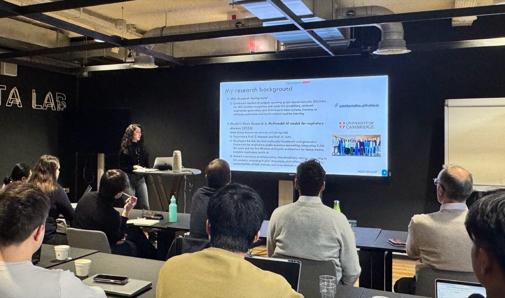

MSCA ANT Network meeting
Kickoff Meeting of the MSCA ANT Doctoral Network
TU Delft, Faculty of Electrical Engineering, Mathematics and Computer Science · Delft, Netherlands

At the end of October, I attended the kickoff meeting of the ANT Doctoral Network at TU Delft, where I presented my research background. Funded by the Marie Skłodowska-Curie Actions, the network brings together 17 doctoral candidates from across Europe working on embedded AI.